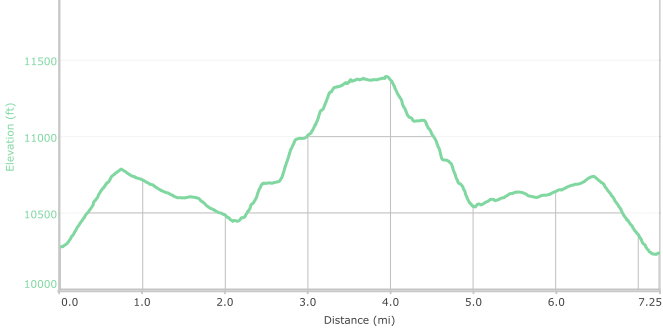

Hike New Mexico
w/ Tom & Ken
Nambe Lake Trail
| Difficulty | Round-trip | Type | Elev. Chg. | Exposure | Wow Factor | Facilities | Seasons | Photos | By Car |
|---|---|---|---|---|---|---|---|---|---|
| Difficult | 7.3 miles | Out-and-back | 1200 ft | Fairly shady | Gorgeous views | Parking Lot | Not Winter |
 |
 |



- Aug 13, 2015: Gorgeous trail of aspens
- Aug 13, 2015: A beautiful preview of the trail up to Nambe Lake
- Aug 13, 2015: Lake and Deception Peaks tower above the lake
- Aug 13, 2015: Every corner of the lake supplies a beautiful view!
- Aug 13, 2015: Where the creek enters the lake
- Aug 13, 2015: Barren rock sets off Nambe Lake
- https://www.flickr.com/photos/139088815@N08/27836774102/in/photostream/
- https://www.flickr.com/photos/139088815@N08/27325824164/in/photostream/
- https://www.flickr.com/photos/139088815@N08/27324954453/in/photostream/
- https://www.flickr.com/photos/139088815@N08/27904009206/in/photostream/
- https://www.flickr.com/photos/139088815@N08/27324919633/in/photostream/
- https://www.flickr.com/photos/139088815@N08/27938133165/in/photostream/
Nambe Lake is a must-see alpine lake in the Santa Fe area, located at over 11,300 ft and sitting at the feet of multiple 12,000 ft plus peaks. Although quite a climb, the trail itself is gorgeous, with tall trees ranging from firs to aspens en route. The trail becomes even more beautiful as it encounters Nambe Creek, which cascades down from the lake to Winsor Trail. The Nambe Lake trail essentially begins at this point, marked by a sign, and proceeds sharply up. The entire lake may be circumnavigated, with beautiful views from every angle!